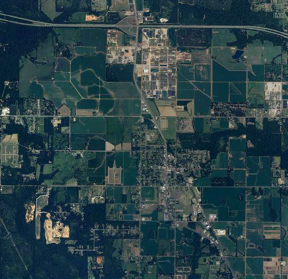

Turn 1 · Site detail
Loxley North, two layouts
1a
Strata stack
Prospect Scout
Target profiles
Discover
Prospects
Sites
Reports
[AB]
All county sites
Loxley North
30.6224° N, 87.7536° W
Parcel
[PARCEL ID]
Available
212 ac
Total
3
Matched prospects
Record verified
[DATE]
by [TEAM MEMBER]
Edit record
Export site sheet

Surface
30.6224° N, 87.7536° W
Site boundary
Loxley North
1 mi
Imagery [SOURCE, DATE]
01
Land
Acreage
212 ac
180 ac developable
Zoning
M-2 heavy industrial
No rezoning needed
Topography
0–2%
Cleared and graded
Soil
[SOIL SERIES]
Geotech report on file
Flood zone
X
Outside the 100-year floodplain
Wetlands
[N] ac
Delineated [DATE]
02
Utilities
Power
115 kV transmission line, substation 0.4 mi
[N] MW available
In place
Water
12 in main at the west boundary
[N] gpd capacity
In place
Sewer
8 in force main, 1.2 mi south
[N] gpd capacity
Extension planned
Natural gas
6 in line along the county road
[N] psi
In place
Fiber
[PROVIDER], at the site entrance
[N] Gbps
In place
03
Access
Rail
On site
[RAILROAD] spur, east boundary
Interstate
2 mi
to I-10, Exit 44
Port
28 mi
to Port of Mobile
Airport
[N] mi
to Mobile International
04
Workforce
Labor shed
[N]
Workers within a 45 min drive
Manufacturing
[N]
Production workers in the shed
Median wage
$[N]/hr
Production occupations
Training
AIDT, customized pre-employment training
Coastal Alabama Community College, [PROGRAM]
05
Matched prospects
Gulfline Composites
Needs 120–180 ac with rail
Aerospace and marine suppliers
88
Meridian Marine Fabrication
Port within 40 mi
Aerospace and marine suppliers
83
Kestrel Aerostructures
Rail and interstate access
Aerospace and marine suppliers
81
Companies, utility figures and distances shown are sample data.
1b
Plat sheet: pinned aerial and ledger
Prospect Scout
Target profiles
Discover
Prospects
Sites
Reports
[AB]
All county sites
Loxley North
Edit record
Export site sheet
Coordinates
1 mi
30.6224° N, 87.7536° W · Parcel [PARCEL ID]
Imagery [SOURCE, DATE]
Record
Status
Available
Owner
[PROPERTY OWNER]
Verified
[DATE] · [TEAM MEMBER]
01
Land
212 ac
180 ac developable
M-2
Heavy industrial
0–2%
Slope, graded
Soil
[SOIL SERIES], geotech on file
Flood zone
X, outside 100-year floodplain
Wetlands
[N] ac delineated
02
Utilities
4 of 5 in place
Power
115 kV, substation 0.4 mi
In place
Water
12 in main at west boundary
In place
Sewer
8 in force main, 1.2 mi south
Extension planned
Gas
6 in line on county road
In place
Fiber
[PROVIDER], site entrance
In place
03
Access
0 mi
Rail spur on east boundary
2 mi
to I-10, Exit 44
28 mi
to Port of Mobile
[N] mi
to Mobile International
04
Workforce
[N]
Workers, 45 min drive
[N]
Production workers
$[N]/hr
Median production wage
AIDT pre-employment training · Coastal Alabama Community College, [PROGRAM]
05
Matched prospects
Gulfline Composites
88
Meridian Marine Fabrication
83
Kestrel Aerostructures
81
Companies, utility figures and distances shown are sample data.